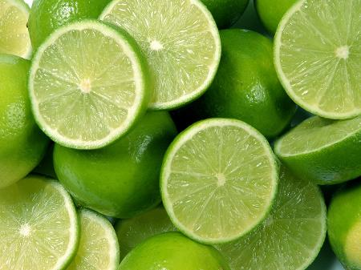

O SITE DAS FRUTAS PREFERIDAS DA LUIZA
MENU
HOME
Página 2
Página 3
Página 5
Página 6
Página 7
Página 8
Página 9
CONTATO
Limão
Minha terceira fruta favorita.
Sobre o nosso querido Limão não achei fatos confiaveis, então teremos apenas um.
O fato é que eu amo Limão!!
